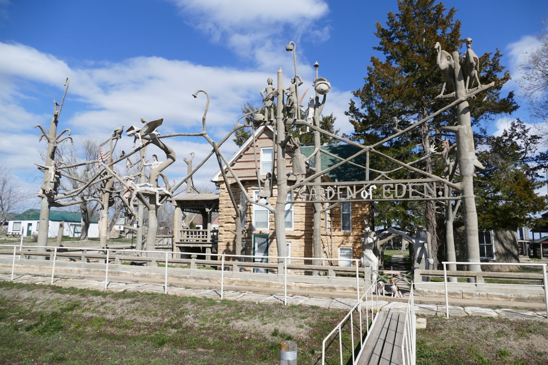

We stopped in Lucas, KS for gas, noticed a handful of quirky artworks along the road, and then a brown sign for "The Garden of Eden", and U-turned into town to find this amazing folk art site. Not only is the house surrounded by scluptures, but it's built like a log cabin, but from long "planks" of local limestone.
Halley Beagle Kansas Lucas Wallace Beagle